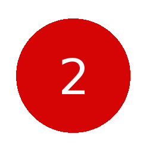
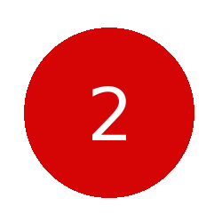

This carousel allows for vertical scrolling.
 



Here we have a carousel with the touch disabled, so it's completely reliant on the buttons to work.
In this carousel, multiple elements are shown in the view container. As many as possible, depending on the width of the container.
In this example, we have a bit of extra javascript to include in the page. We use this to jump to a location in the carousel. It's what we call an "instance" - only for this instance of the carousel will the feature be enabled.
<script type='text/javascript'>
x$("[data-ur-carousel-component='item']").on("click",
function(e) {console.log("You clicked:", e.target.src)});
x$("#jump").on(
"click",
function() {
console.log("jumping...");
Ur.Widgets["carousel"]["MyFirstCarousel"].jump_to_index(4);
}
);
</script>
Jump to 5th item